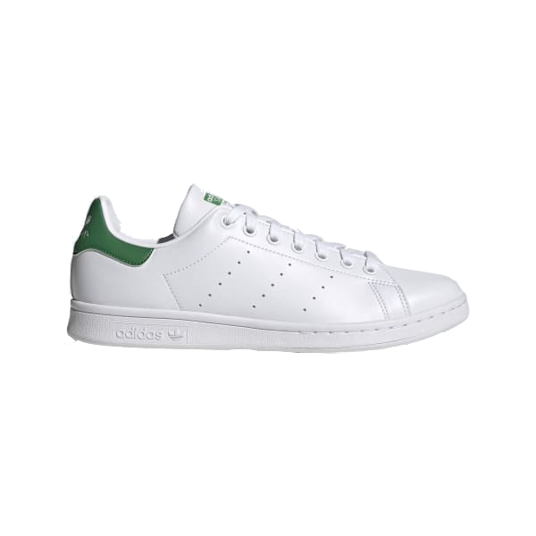
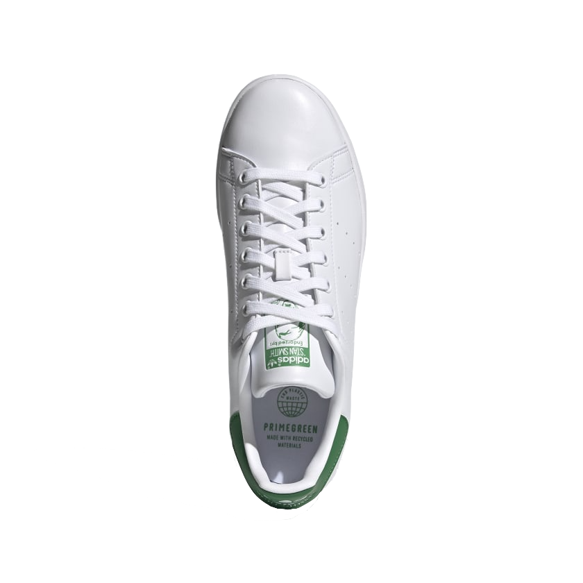
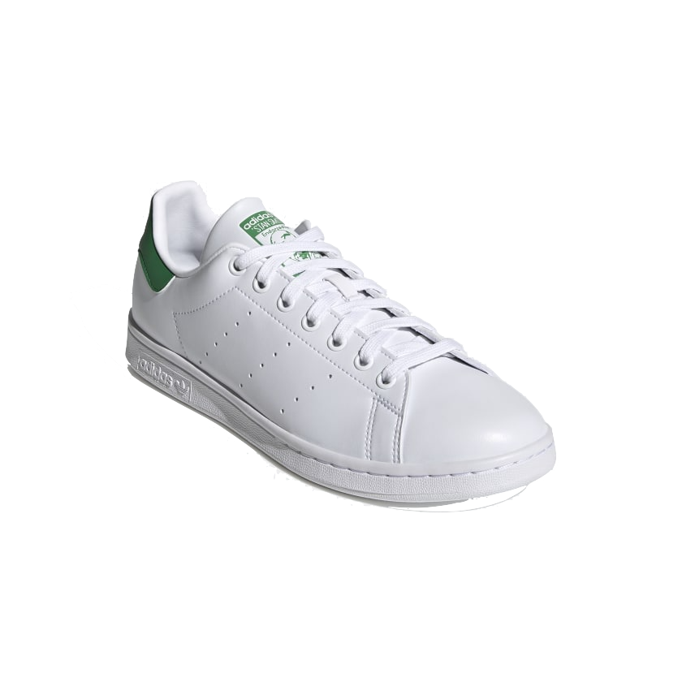
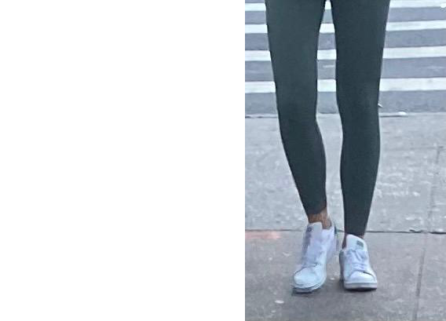
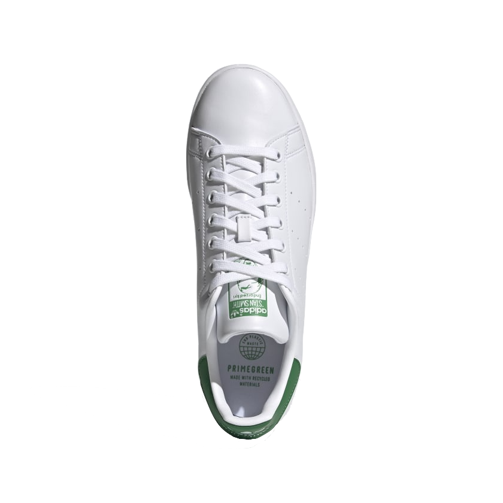
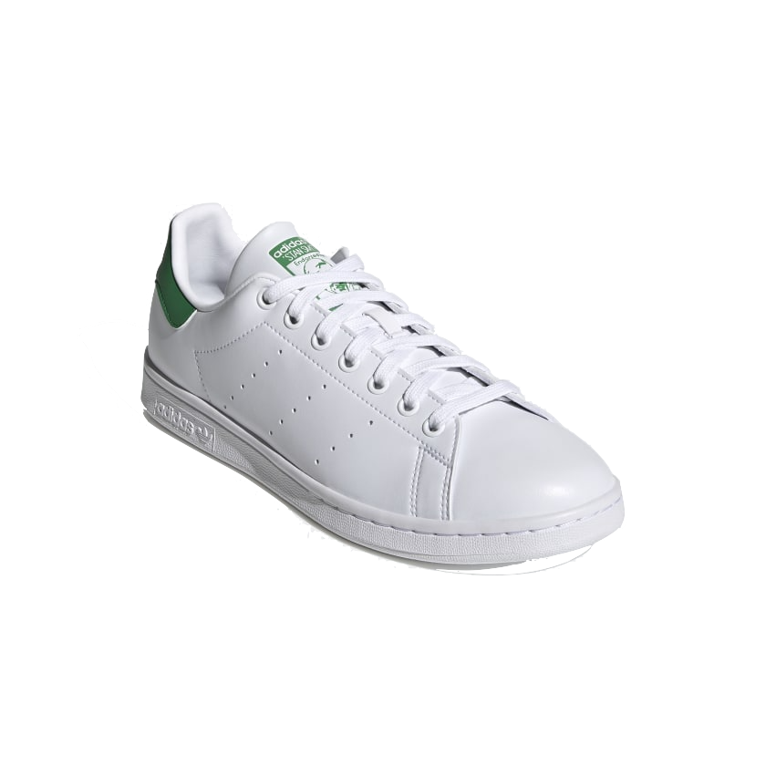
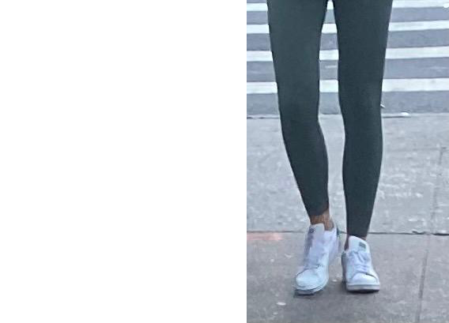

$ 85
ADIDAS STAN SMITH
Stan Smith white sole green back
COLOR WHITE GREEN
CHECK WEBSITE AVAILABILITY
WWW.ADIDAS.COM
HISTORY
- • For over 50 years and counting, adidas Stan Smith Shoes have continued to hold their place as an icon.
- • Inspired by tennis player, Stan Smith in the 1970's
- • This pair shows off a fresh redesign as part of adidas' commitment to use only recycled polyester by 2024
PRODUCT DETAILS
- • Regular fit
- • Vegan
- • Lace closure
- • Imported
- • Synthetic lining
- • Rubber outside
- • Tongue pull-on tab
- • White laces
- Product color: Cloud White / Cloud White / Green
- Product code: FX5502
SPOTTED
- • Sneaker spotted near highschool in alphabet city
- • Worn by a teenager on a walk back from school
- • Paired with a pair of leggings, a hoodie, and a school backpack
- • Check on footwear map